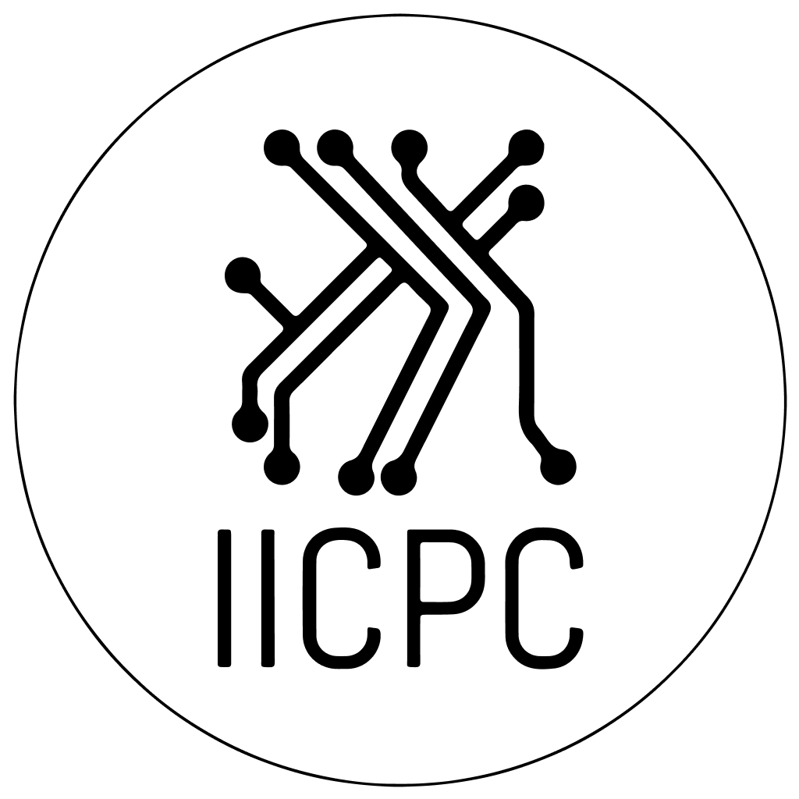

Final-year B.Tech at IIT Madras. My interests and experience ranges from ML research to forward deployed engineering. Training and interpreting models at one end, sitting with the people who actually use them at the other. Always curious about how things work, and how they can be made better.
Currently building voice AI agents at Riverline AI and researching LLM interpretability at IIT Madras' Centre for Responsible AI.
When I'm not tinkering with agents and models, I also manage operations for quant hiring across India.
All about Voice agents for debt collection and credit wellness
LAM-driven reasoning models for the Indian judicial system, working towards interpretability of LLMs in legal systems. Joint project with IIT Kanpur faculty.
Built an automated survey-analytics pipeline on LangGraph + Celery, with a token-efficient orchestration layer that cut API costs 40%.

ICManaging operations for quant hiring in India.
Legal-document NLP for construction claims. Fine-tuned NER pipeline that hit 86.1% F1 against human annotation.